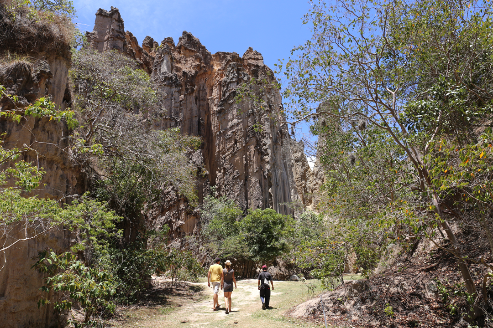

<div class="modal">
  <div class="modal-body">
    <header class="modal-body-header">
      
      
      

    </header>
    <section class="modal-body-main">
      <div class="modal-body-main-imagenes">
        
        <div class="contendor-imagenes">
          
        
        </div>
      </div>
      <div class="modal-body-main-contenido">
        <a [routerLink]="['/']">x</a>

        <h1>LOS ESTORAQUES DE BELÉN  </h1>
        <h3>Descubre la Maravilla Natural de Los Estoraques en la Playa de Belén: Donde la Arena se Convierte en Arte y la Naturaleza Crea Esculturas </h3>
        <p>Bienvenido a un rincón único en el norte de Colombia, donde la naturaleza se convierte en artista y las formaciones rocosas cobran vida en medio del paisaje árido y deslumbrante. Los Estoraques, en la Playa de Belén, son un fenómeno geológico impresionante que te transporta a un mundo de maravillas naturales y esculturas de piedra que desafían la imaginación.  </p>


          <h2>Esculturas de Arena y Rocas en la Playa de Belén </h2>
          <p>Al llegar a la Playa de Belén, te encontrarás con un escenario surrealista donde la arena se mezcla con las formaciones rocosas para crear una obra de arte natural. Los Estoraques son estructuras geológicas talladas por el viento y la lluvia a lo largo de miles de años, dando lugar a figuras caprichosas y formas intrincadas que parecen sacadas de un sueño. Explora este laberinto de rocas y arena, maravíllate con las esculturas naturales y deja volar tu imaginación mientras encuentras caras y criaturas en las formas rocosas.  </p>
        
          <h2>Fotografía y Fotogenia Natural  </h2>
          <p>Los Estoraques son un paraíso para los amantes de la fotografía. Con la luz del sol creando sombras y resaltando las texturas de las rocas, cada ángulo ofrece una oportunidad para capturar imágenes impresionantes y memorables. Las puestas de sol pintan el cielo con tonos cálidos y dorados, creando un telón de fondo perfecto para fotos inolvidables que capturan la magia del lugar.  </p>

          <h2>Senderismo entre Formaciones Rocosas </h2>
          <p>Para los aventureros, Los Estoraques ofrecen senderos serpenteantes que te llevan a través de este paisaje único. Disfruta de caminatas entre las formaciones rocosas, descubre cuevas escondidas y admira la flora y fauna autóctonas que han encontrado su hogar en este entorno extraordinario. La sensación de estar rodeado por las altas columnas y las figuras erosionadas es simplemente mágica.   </p>

          <h2>Picnics y Momentos de Paz  </h2>
          <p>Los Estoraques también son un lugar ideal para disfrutar de un picnic en la naturaleza. Escoge un lugar entre las sombras de las rocas y disfruta de una comida al aire libre mientras contemplas las vistas panorámicas del paisaje circundante. La tranquilidad del entorno te brinda momentos de paz y serenidad, lejos del bullicio de la vida cotidiana. </p>

          <h2>Cómo Llegar </h2>
          <p>La Playa de Belén y Los Estoraques se encuentran a una distancia accesible desde varias ciudades cercanas, como Ocaña y Cúcuta. Un corto viaje en coche te llevará a este tesoro escondido en el norte de Colombia, donde te esperan experiencias inolvidables y una conexión profunda con la naturaleza. </p>
      </div>
    </section>
    <footer>
      
    </footer>
  </div>
</div>
